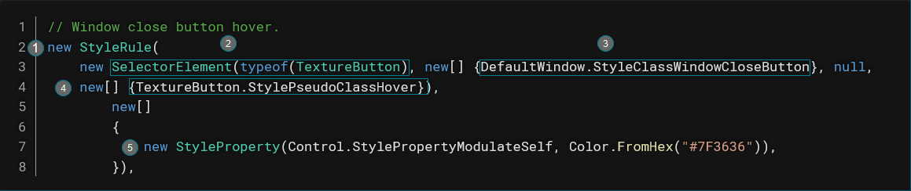

Руководство по выживанию в мире UI¶
Предупреждение
Это перевод на русский язык одной из страниц из официальной документации Space Station 14, прошедший нашу дополнительную редакцию.
Сначала научись ходить, прежде чем бежать¶
Итак, ты решил покорить суровые пустоши разработки интерфейсов и работы со стилями?
Отлично!
Но прежде чем ты начнешь создавать крутые UI с помощью нашей системы, тебе нужно понять основы верстки. Настоятельно рекомендую сначала прочитать документацию по основам интерфейсов.
Быстро и просто (Используем FancyWindow)¶
Цитата
Грань между жизнью и смертью определяется тем, на что мы готовы пойти.
- Беар Гриллс
Твоему интерфейсу не нужна магия сложных стилей, но хочется, чтобы он выглядел как финальные макеты на нашем Figma?
Примечание
В контексте перевода, это ссылка на Figma Space Wizards, а НЕ Space Exodus
Повезло! Ты можешь просто использовать FancyWindow вместо DefaultWindow!
Для этого замени:
На:Учимся у выживших¶
Когда делаешь первые шаги в UI-пустошах, смотри как смелые разработчики до тебя выживали в этих суровых условиях.
Отличный пример — GravityGeneratorWindow.
Там есть базовые стили, которые можно использовать в своих интерфейсах:
- StatusFieldTitle для заголовков
- OpenRight/OpenLeft для кнопок
Просто скопируй атрибут StyleClasses="..." в свой компонент.
Если увидишь красивый UI с нужным тебе стилем — попробуй позаимствовать подход (мы это называем "творческим заимствованием").
Копаем глубже¶
Цитата
Награды дикой природы и награды выжившего достаются тем, кто копает глубже и в итоге остаётся в живых.
- Беар Гриллс
Использовал FancyWindow, позаимствовал стили, но интерфейс всё ещё недостаточно крутой?
Значит, придётся спуститься в опасные земли стилей. *звучит драматичная музыка*
Загляни в StyleNano.cs. Не пугайся его 1318 строк!
Здесь три основных элемента:
1. Переменные и константы
2. Стили в "сложном" формате
3. Стили в "простом" формате
Новые стили лучше писать "простым" способом, но понимать "сложный" тоже нужно — так ты сможешь разбирать существующие стили.
Смело пропускай объявления переменных до этого момента (примерно строка 465):
Здесь живут все стилевые классы. Именно сюда можно добавлять новые или искать существующие."Сложный" способ объявления стилей¶
Большинство текущих стилей написаны так:

1. Создаём экземпляр StyleRule
2. Указываем тип элемента через SelectorElement
3. Задаём имя стиля как массив строк (StyleClassWindowCloseButton — это просто строка-константа)
4. Четвёртый параметр — псевдокласс для состояний вроде :hover (можно оставить null)
5. Второй параметр StyleRule — массив свойств (StyleProperty), где первое значение — название свойства, второе — значение
"Простой" способ объявления стилей¶
Element<PanelContainer> и .Class("BackgroundDark") задают тип элемента и класс стиля2.
.Prop() устанавливает значение свойства (в примере — цвет фона)
Скрытые опасности¶
Цитата
Дикая природа непредсказуема. Проблемы возникают всегда, когда меньше всего ждёшь.
- Беар Гриллс